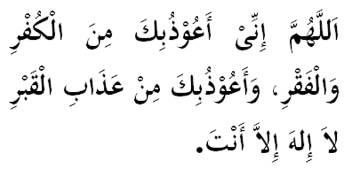

|
Terjemahan "Ya Allah, aku berlindung kepadaMu dari kufur dan kefakiran. Ya Allah, aku berlindung kepadaMu dari siksa kubur. (Ikrar kami) Tidak ada Tuhan (yang sebenarnya) kecuali Engkau." Fadhilat Wirid Daripada Abdul Rahman bin Abi Bakrah (RA), dia pernah berkata kepada bapanya: " Wahai bapaku, saya mendengar bapa selalu mengulang-ulang doa (bacaan di atas) tiap-tiap pagi dan petang." Jawab bapanya: " Ya! Bapa dengar Rasulullah berdoa seperti itu, maka bapa ingin menyebut sunnahnya." (Riwayat Oleh Abi Daud) |

|